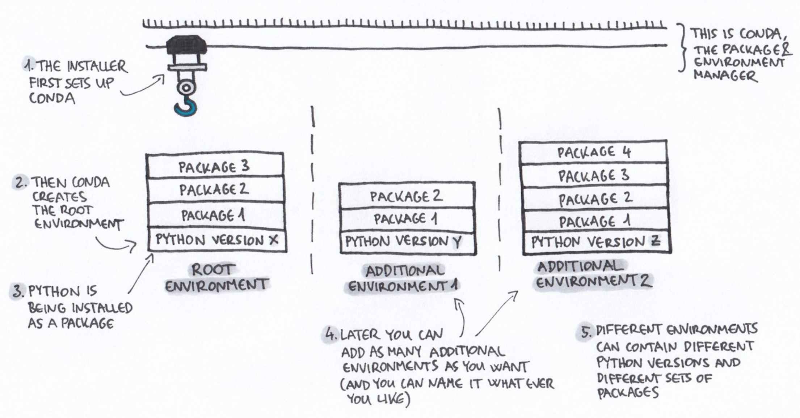

Introduction to conda for software installation and environment management
Why should I use a package and environment management system?
Package managers and why we use them. A package manager is a software tool that automates the process of installing, upgrading, configuring, or removing software from your computer. Pip (python), BiocManager (Bioconductor R packages), and APT (ubuntu) are three commonly encountered package managers. Package managers make installation software easier.
Environments and why we use them. Environment managers address the problems created when software is installed system-wide. System-wide installs create complex dependencies between disparate projects that are difficult to entangle to version compute environments and that can create dependcency conflicts. An environment is a directory that contains a specific collection of packages/tools that you have installed. An environment manager is a software tool that organizes where and how software is installed on a computer. For example, you may have one environment with Python 2.7 and its dependencies, and another environment with Python 3.4 for legacy testing. If you change one environment, your other environments are not affected. You can easily activate or deactivate environments, which is how you switch between them.
What is Conda?
Conda is open source package and runs on Windows, Mac OS and Linux.
- Conda can quickly install, run, and update packages and their dependencies.
- Conda can create, save, load, and switch between project specific software environments on your local computer.
Conda as a package manager helps you find and install packages. If you need a package that requires a different version of Python, you do not need to switch to a different environment manager, because Conda is also an environment manager. With a few commands, you can set up a totally separate environment to run that different version of Python, while continuing to run a different version of Python in another environment.
How does Conda work?

Installing Conda
For this lesson, we'll install miniconda. We've included the latest installation instructions below. You can access the latest and legacy installation links here.
Installing conda on an Apple machine
Apple now has two processor types, the Intel x64 and the Apple M1 (or M2) ARM64. As of October 2022, many of the packages available via conda-forge and other conda installation channels are only available on the Intel x64 processor. Therefore, even if you have an M1 (or M2) Mac, we currently recommend that you use the Intel x64 installation and take advantage of Apple's translation program Rosetta. This requires a little bit of pre-configuration to make sure your Terminal application also runs with Rosetta. To set this up, open Finder -> navigate to your Applications folder -> right click on your Terminal application (either Terminal or iTerm2) -> select Get Info -> check the box for Open using Rosetta.

After that is configured, open your Terminal application and copy and paste the following commands to download and install miniconda.
curl -JLO https://repo.anaconda.com/miniconda/Miniconda3-latest-MacOSX-x86_64.sh
bash Miniconda3-latest-MacOSX-x86_64.sh
This will prompt you to accept the miniconda license, ask you whether you accept the default installation location, and whether you want the installation script to intialize conda. Accept all of the defaults and then open and close your terminal for the installation to take effect.
Installing conda on a Linux machine
Each time you start a new AWS (or many other cloud) machine, you'll have to install miniconda. The installation process is the same as it is on Mac except you'll need to use a different download URL.
curl -JLO https://repo.anaconda.com/miniconda/Miniconda3-latest-Linux-x86_64.sh
bash Miniconda3-latest-Linux-x86_64.sh
This will prompt you to accept the miniconda license, ask you whether you accept the default installation location, and whether you want the installation script to intialize conda. Accept all of the defaults and then open and close your terminal for the installation to take effect. To activate conda, you can either log out and log back in or run:
source ~/.bashrc
Additional notes about conda installations
Versioning conda installations. The conda API has changed over the years. You can access legacy installers associated with specific versions of python here. If you need a specific version of conda, you can access the conda package through the conda-forge channel and install it using the instructions for installing specific versions of a package detailed later in the lesson.
Conda intialization.
By default, the Conda installer "initializes" conda.
This allows you to access Conda commands by putting conda in your path any time you log into a terminal.
Conda acheives this by appending code to you ~/.zshrc or ~/.bashrc file.
These lines of code look like this:
# >>> conda initialize >>>
# !! Contents within this block are managed by 'conda init' !!
__conda_setup="$('/Users/taylorreiter/miniconda3/bin/conda' 'shell.zsh' 'hook' 2> /dev/null)"
if [ $? -eq 0 ]; then
eval "$__conda_setup"
else
if [ -f "/Users/taylorreiter/miniconda3/etc/profile.d/conda.sh" ]; then
. "/Users/taylorreiter/miniconda3/etc/profile.d/conda.sh"
else
export PATH="/Users/taylorreiter/miniconda3/bin:$PATH"
fi
fi
unset __conda_setup
# <<< conda initialize <<<
conda init, that you can use to initialize conda if you choose to skip this step during installation.
You can always remove these lines if you change your mind about wanting conda in your PATH.
Activating conda and the (base) environment
Conda needs to be activated for it to be usable.
During the installation process, we configured conda to automatically activate when the shell is started.
If conda is activated, you should see (base) prepend your path.
If at any point you don't want the base environment to be active when you log in to a shell, you can disable this behavior using the command:
conda config --set auto_activate_base false
The base environment contains all of the software needed for conda to run.
This includes a python installation and some core system libraries and dependencies of Conda.
Installing mamba
While you can install new packages with conda, sometimes it's...slow. Mamba helps solve this problem. Mamba is a drop in replacement for conda and it improves installation speeds by decreasing the time it takes to solve dependency conflicts. You can install mamba with:
conda install -c conda-forge mamba
Conda channels
Channels are the locations of the repositories (directories) online containing Conda packages. Upon Conda’s installation, Continuum’s (Conda’s developer) channels are set by default, so without any further modification, these are the locations where your Conda will start searching for packages.
Channels in Conda are ordered. The channel with the highest priority is the first one that Conda checks, looking for the package you asked for. You can change this order, and also add channels to it (and set their priority as well).
You should follow the channel order below -- otherwise, sometimes you'll encounter weird bugs because packages will be installed from the wrong location.
conda config --add channels defaults
conda config --add channels bioconda
conda config --add channels conda-forge
Once we have our channel order configured, you will no longer need to use the explicit channel parameter -c when you install new packages.

If multiple channels contain a package, and one channel contains a newer version than the other one, the order of the channels determines which of these two versions is going to be installed, even if the higher priority channel contains the older version.

Creating a new environment
Other than mamba, we recommend you keep you base environment free from all other installations.
If you install everything in base, you'll end up with lots of dependencies that need to be solved which will decrease installation speeds.
It also becomes more difficult to document software installations and versions required for specific project.
To create a new environment named, for instance mynewenv (you can name it what ever you like), run:
conda create --name mynewenv
Navigating environments through activate and deactivate
If you want to use an environment (for instance manage packages, or run Python scripts inside it) you need to first activate it.
conda activate mynewenv
If this command gives you an error, you might not selected for conda to initialize during installation. You can initialize conda with:
conda init
Once you've successfully run conda activate, the command prompt should be prepended by (mynewenv) instead of (base).
The command prompt is a useful tool to orient yourself as to which environment you're currently using.
If you install a new tool while in an environment, it only gets installed in that environment.
mamba install samtools
Even better, you can specify which version of samtools you would like to install:
mamba install samtools=1.9
We just installed a very old version. We can ask mamba to automatically update our package installation to the latest version:
mamba update samtools
The directories of the active environment’s executable files are added to the system path (this means that you can now access them more easily).
which samtools
You can leave an environment with this command:
conda deactivate
Now, if we run the same command, we'll get a different result:
which samtools
Searching, installing, and removing packages
To list out all the installed packages in the currently active environment, run:
conda list
To search for all the available versions of a certain package, you can use the search command. For instance, to list out all the versions of samtools, run:
conda search samtools
Similarly to the conda list command, this one results in a list of the matching package names, versions, and channels:
Loading channels: done
# Name Version Build Channel
samtools 0.1.12 0 bioconda
samtools 0.1.12 1 bioconda
samtools 0.1.12 2 bioconda
samtools 0.1.12 hdd8ed8b_3 bioconda
Freezing an environment
Keeping track of the software versions you used to run your analyses is a cornerstone of reproducible science. Conda facilitates this in many ways. One handy way is to record the packages you've installed into a text file.
This will save the list of conda-installed software you have in a particular environment to the file packages.txt:
conda activate mynewenv
conda env export > mynewenv.yml
conda deactivate
conda env create -n mynewenv2 --file mynewenv.yml
Encoding environments in and installing environments from text files
Freezing an environment with conda env export is a perfectly viable option to record your compute state for a given environment.
This approach can be brittle to operating system because so there are other more flexible ways to achieve similar things.
Instead, you can keep track of software and versions you install in a YAML file. Open a text file using nano, vim, VS Code, or your favorite text editor and paste the following text.
channels:
- conda-forge
- bioconda
- defaults
dependencies:
- samtools=1.9
Save the file as samtools.yml.
Then, you can install:
mamba env create -n samtools -f samtools.yml
Using small environments
The performance of conda environments decreases with increasing size.
We hinted at this above when we recommended to keep the base environment free of software installations other than mamba.
The larger a conda environment becomes, the longer it takes to activate the environment and to install new software.
You'll have to experiment with a strategy that works for you as far as environment size goes, but we recommend a strategy that keeps environments small.
One starting place might be to have one environment per project.
If you want to test new installations of software before you're committed to using it, you could create a sandbox environment and install software for experimenting there.
Then, when that environment gets too big, you can delete it and start over.
To delete an environment, run:
conda env remove -n sandbox
Keeping an eye on the size of conda environments
Conda environments can become quite large depending on how many packages are installed. We can check how large any of our Conda enviroments are by finding the path to the environment directory and then estimating the file space usage of that directory.
First, let's find where we put out mynewenv directory
conda env list
This will print out a list of the locations of our Conda environments.
We installed conda in our home directory, so we can use the ~ shortcut to access our environment paths.
Next, let's use the command du to estimate the space our mynewenv directory is taking up!
du -sh ~/miniconda3/envs/mynewenv/
We can see our mynewenv environment is taking up about 12K of space.
Summary of Conda Commands
| Conda commands | action |
|---|---|
conda install |
install a package |
conda search |
search for a package |
conda info |
list of information about the environment |
conda list |
list out all the installed packages in the currently active environment |
conda remove |
remove a conda package |
conda config --get channels |
list out the active channels and their priorities |
conda update |
update all the installed packages |
conda env list |
list the different environments you have set up and their locations |
conda activate mynewenv |
activate the mynewenv Conda environment (this also works for activating our base environment |
A note about the conda ecosystem
Conda has truly been a gift to the scientific community, taking software installs that used to take days and bringing it down to minutes. It also simplified versioning and environment management by integrating software encoded in many different languages into its ecosystem (python, R, perl, rust...). It has therefore attracted contributions from many parties over the years that have lead to a diversity of modular pieces that participate in the conda ecosystem. This can be especially confusing for conda newcomers. This section outlines many of the key pieces in the conda ecosytem to reduce confusion as people onboard to conda.
Conda itself is a piece of software that is a package and environment manager. To get access to the conda software, you need to install it. The most popular way to install conda is via miniconda or miniforge. miniforge is the community (conda-forge) driven minimalistic conda installer. By default, subsequent package installations come from conda-forge channel. miniconda is the Anaconda (company) driven minimalistic conda installer. By default, subsequent package installations come from anaconda channels (default or otherwise). The default channel order can be changed for either conda installation type. miniforge started when miniconda didn't support the linux aarch64 system architectures and was quickly adopted by many conda user. It's stuck around even though both miniconda and miniforge support most system architectures.
There's another distinction between miniconda and anaconda. Anaconda comes with all of the contents of miniconda, plus a bunch of other packages that are used frequently with scientific computing. Anaconda also comes with a graphical user interface. We use miniconda because its the minimum set of tools that we need to install packages and manage environments and we can use it locally and on remote computers.
One of the problems conda addresses is resolving dependency conflicts betweens many pieces of software installed in the same environment. This is an NP-complete problem meaning it gets slower as more software is added to an environment and it's a hard problem to solve. mamba is a drop-in replacement for conda that offers higher speed and more reliable environment solutions. However, the best way to install mamba at the moment is via conda. Mamba is worth the confusion it has caused -- it decreases install times by orders of magnitude thus saving time.
Extra content
Conda and workflow managers
Conda is integrated into workflow managers like snakemake and nextflow. Using environment files or other directives that point toward the conda packages that are needed for a specific rule or process, the workflow manager will use conda to build the necessary environments and will automatically activate and deactivate them for each rule or process as it runs the workflow. In this case, it's best practice to have only the tools needed for a specific rule or process in a given environment -- often, this will mean only including one tool per an environment.
For snakemake, conda environments are encoded in YAML files and fed to a given rule using the conda: directive and the path to the YAML file.
For nextflow, conda environments are actually the least-recommended way to execute a pipeline.
While you can give a process a conda package name and its build hash, it's better to use the biocontainer build for that conda package on docker.
This overcomes issues with reproducibility that stem from differences in operating systems.
Building a conda package from an R library on CRAN
Once you become reliant on conda to manage all of your packages, it can be disappointing when your favorite new pacakge isn't available on the conda-forge channel. If the R package is available on CRAN, it's relatively straightforward to build the conda package yourself and get it onto conda-forge. You can follow instructions in this blog post if you ever want to do this. This only works for CRAN packages that do not depend on Bioconductor packages -- Bioconductor packages and the packages that depend on them are released on bioconda, while CRAN packages are released on conda-forge.
Installing packages with pip when they're in PyPi but not in a conda channel
Sometimes the package you're interested in installation is available in PyPi but not in a conda channel.
You can use pip to install things into a conda environment to overcome this.
To do this, you need to install pip via conda, and then you can use pip install.
Whatever packages you pip install will only be available in the conda environment you have active at time of installation.
To document pip installations in a YAML file, use the following syntax:
channels:
- conda-forge
- bioconda
- defaults
dependencies:
- pip
- pip:
- genome-grist==0.7
Installing PyPi-compliant packages from GitHub into a conda channel using pip
Similar to installing packages in PyPi via pip, you can install PyPi-compliant packages that are on GitHub directly from GitHub. We include a YAML file demonstrating this below. While this is handy, especially for development, it's can be difficult to version software installations so you should use this approach with caution and be sure to document versions (or commit hashes) elsewhere.
channels:
- conda-forge
- bioconda
- defaults
dependencies:
- sourmash
- pip
- pip:
- git+https://github.com/czbiohub/orpheum@master
Conda-lock
Conda-lock is a lightweight library generates lock files for conda environments. These lock files document the results of conda solve for each platform that you designate. This can help to exactly reproduce an environment across operating systems and to reduce environment creation times.